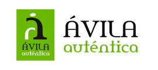

Ávila Auténtica es una marca colectiva que la Diputación Provincial de Ávila ha creado con el objetivo de desarrollar una imagen común que impulse la notoriedad y prestigio de los productos agroalimentarios y empresas de la provincia.
Los productores agroalimentarios cuyos productos sean producidos, elaborados y/o transformados en la provincia, los establecimientos de hostelería, los comercios minoristas de alimentación y los establecimientos de alojamiento rural establecidos en el territorio de Ávila.
Objetivos:Ávila Auténtica Calidad Oro agrupará a los productos agroalimentarios que posean alguna figura de calidad, un sistema de gestión de Calidad y/o seguridad alimentaria certificado o que cuenten con el reconocimiento de Empresa Artesana Alimentaria de Castilla y León.
Ávila Auténtica Calidad Plata agrupará a los productos agroalimentarios que es aquel que ha demostrado su calidad, que obtiene resultados, que tiene una buena imagen empresarial, que satisface las expectativas de sus clientes o consumidores y que por supuesto son una identificación de productos agroalimentarios originarios de esta provincia.
Puedes ver el LISTADO DE EMPRESAS ASOCIADAS desde el menú superior.